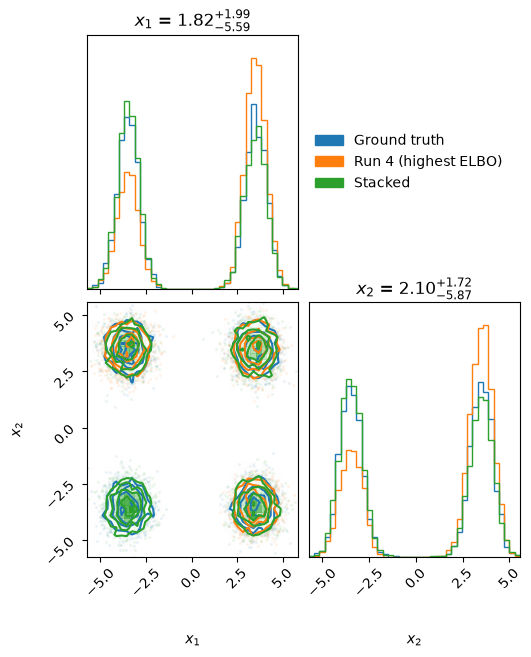
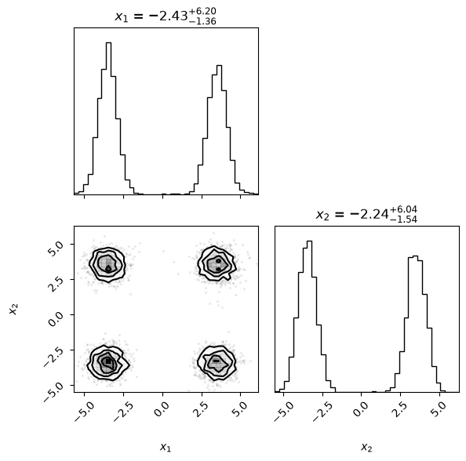

PyVBMC Example 7: Stacking the posteriors of several runs (S-VBMC)#
In this notebook, we combine the variational posteriors of several independent PyVBMC runs into a single stacked posterior with S-VBMC (Stacking Variational Bayesian Monte Carlo; Silvestrin, Li & Acerbi, 2025).
Running PyVBMC several times from different starting points is standard practice to check that the runs agree (see Example 4). When they do not, for instance because the posterior is multimodal and each run captures only some of the modes, S-VBMC pools the mixture components of all runs and optimizes their weights against the stacked ELBO, using the expected log-joint statistics that every run already stores. Stacking therefore needs no further evaluations of the model.
This notebook is Part 7 of a series of notebooks in which we present various example usages for VBMC with the PyVBMC package. The code used in this example is available as a script here. S-VBMC needs the optional torch dependency: install it with pip install --upgrade "pyvbmc[torch]" (see the installation instructions for a CPU-only torch).
import sys
if "google.colab" in sys.modules: # Colab lacks PyVBMC: install it
%pip install --upgrade "pyvbmc[torch]"
import numpy as np
import scipy.stats as scs
from scipy.special import logsumexp
from pyvbmc import VBMC, SVBMC
from pyvbmc.svbmc.utils import find_init_bounds, overlay_corner_plot
1. Model definition: a target with four modes#
We take a two-dimensional target with four well-separated modes, an equal mixture of four Gaussians centered on the corners of a square, as a stand-in for a multimodal posterior. Since we know the target, we can later compare the individual runs and the stacked posterior against ground-truth samples, and measure how much of each posterior lies near each mode (mode_shares). As usual, PyVBMC only needs the unnormalized log density (the log-joint), here defined directly.
D = 2
modes = np.array([[-3.5, -3.5], [-3.5, 3.5], [3.5, -3.5], [3.5, 3.5]])
mode_sd = 0.6
def log_joint(x):
x = np.atleast_2d(x)
log_comps = np.stack(
[scs.norm.logpdf(x, m, mode_sd).sum(axis=1) for m in modes], axis=1
)
return logsumexp(log_comps, axis=1) - np.log(len(modes))
def sample_truth(n, rng):
which = rng.integers(len(modes), size=n)
return modes[which] + mode_sd * rng.standard_normal((n, D))
def mode_shares(samples):
# The share of the samples within three SDs of each mode.
dist = np.linalg.norm(samples[:, None, :] - modes, axis=2)
return np.mean(dist < 3 * mode_sd, axis=0)
LB = np.full((1, D), -10.0) # hard bounds
UB = np.full((1, D), 10.0)
PLB = np.full((1, D), -5.0) # plausible bounds
PUB = np.full((1, D), 5.0)
2. Run PyVBMC several times#
We start each run from a different random point in the plausible box. find_init_bounds returns the box to draw starting points from (the plausible bounds when given, else the bounds). We run six times with different seeds, a few more runs than usual since there are four modes to find, and keep the returned posteriors. Each posterior carries the run’s ELBO estimate and its uncertainty, whether PyVBMC judged the run converged (stable), and the expected log-joint statistics that stacking needs. S-VBMC keeps only the converged runs whose expected log-joint is precise enough, and uses their ELBOs to initialize the weights.
n_runs = 6
rng = np.random.default_rng(0)
sample_lb, sample_ub = find_init_bounds(LB, UB, PLB, PUB)
vps = []
for i in range(n_runs):
x0 = rng.uniform(sample_lb, sample_ub, size=(1, D))
vbmc = VBMC(
log_joint, x0, LB, UB, PLB, PUB, options={"display": "off"}, seed=i
)
vp, results = vbmc.optimize()
vps.append(vp)
print(
f"Run {i}: x0 = {np.round(x0.ravel(), 2)}, "
f"ELBO = {vp.stats['elbo']:.3f} +/- {vp.stats['elbo_sd']:.3f}, "
f"converged: {vp.stats['stable']}"
)
Run 0: x0 = [ 1.37 -2.3 ], ELBO = -1.379 +/- 0.001, converged: True
Run 1: x0 = [-4.59 -4.83], ELBO = -1.384 +/- 0.001, converged: True
Run 2: x0 = [3.13 4.13], ELBO = -0.691 +/- 0.001, converged: True
Run 3: x0 = [1.07 2.29], ELBO = -1.385 +/- 0.001, converged: True
Run 4: x0 = [0.44 4.35], ELBO = -0.284 +/- 0.001, converged: True
Run 5: x0 = [ 3.16 -4.97], ELBO = -0.694 +/- 0.001, converged: True
The target is normalized, so its log evidence is 0. A run that captures \(k\) of the four equally weighted modes misses the probability mass of the others and reports an ELBO close to \(\log(k/4)\): about \(-1.39\) for one mode, \(-0.69\) for two and \(-0.29\) for three. Here no run reports an ELBO close to 0: each run found only some of the modes, as single runs on this target typically do, so keeping the run with the highest ELBO would still lose part of the posterior. Every run is converged by PyVBMC’s criteria, which judge the stability of the solution found, not whether every mode was found: this is exactly the situation stacking is for.
3. Stack the posteriors#
SVBMC takes the list of posteriors and pools the components of the retained runs. It discards runs that did not converge or whose expected log-joint is too uncertain (s_max=np.sqrt(5) by default), and raises an error if fewer than M_min runs remain (M_min=2/3, so the default requires two thirds of the input runs).
By default, optimize() adjusts the weights of all pooled components to maximize the stacked ELBO. It modifies the SVBMC object in place, returns None, and leaves the input posteriors unchanged.
stacked = SVBMC(vps, seed=0)
stacked.optimize(n_samples_final=100)
print("Stacked ELBO: ", round(stacked.elbo, 3))
print("SD of the raw estimate:", round(stacked.elbo_sd, 3))
print("Estimate reported: ", stacked.elbo_details["headline_method"])
print("Raw ELBO: ", round(stacked.elbo_details["raw"], 3))
print("Noise status source: ", stacked.noise_status_source)
# Total weight assigned to each retained run:
offsets = np.concatenate([[0], np.cumsum(stacked.K)])
for m in range(stacked.M):
share = stacked.w[0, offsets[m] : offsets[m + 1]].sum()
print(f"Run {vps.index(stacked.vp_list[m])}: total weight {share:.3f}")
Got 6 well-converged runs after filters.
Tip: Stacking 3–5 well-converged VBMC runs is usually enough. On hard problems, such as multimodal posteriors, stacking more runs can still improve the posterior.
https://acerbilab.org/pyvbmc/_examples/pyvbmc_example_7_stacking.html
Optimizing the stacked ELBO w.r.t. all weights.
Initial elbo = -0.10810092317690723
iter 5: elbo = -0.05701520411276606
iter 10: elbo = 0.050095678492897644
iter 15: elbo = -0.0320959044468494
Stacked ELBO: -0.014
SD of the raw estimate: 0.014
Estimate reported: raw
Raw ELBO: -0.014
Noise status source: ('recorded', 'recorded', 'recorded', 'recorded', 'recorded', 'recorded')
Run 0: total weight 0.058
Run 1: total weight 0.146
Run 2: total weight 0.209
Run 3: total weight 0.058
Run 4: total weight 0.373
Run 5: total weight 0.156
The scalar stacked.elbo is S-VBMC’s estimate of the stacked ELBO. S-VBMC computes several estimates at the selected weights, listed in stacked.elbo_details with a baseline and diagnostics, and reports the one that suits the stack, named in stacked.elbo_details["headline_method"]. This target is noiseless, so it reports raw, a fresh estimate at the selected weights. The target’s exact log evidence is 0, but the reported ELBO remains an estimate. If any retained run is noisy, stacked.elbo normally reports a two-level shrinkage estimate designed to reduce the upward selection bias from optimizing the weights on uncertain GP estimates. Residual bias may remain.
stacked.elbo_sd combines the Monte Carlo uncertainty of the entropy estimate and the GP quadrature uncertainty for the raw estimate at the selected weights. It excludes selection bias and does not propagate the shrinkage, so it is not a calibrated confidence interval for the estimate that a noisy stack reports.
See the S-VBMC API reference for the complete estimator report, the treatment of noisy runs, and migration from the standalone svbmc package.
4. Sample from the stacked posterior#
Each run works in its own transformed parameter space, so the mixture components of different runs are not directly comparable and the stacked posterior is not a single Gaussian mixture in the original space. Always use stacked.sample(n) for estimates and plots: it returns n independent draws in the original parameter space (a run is picked at random by its total weight, then a point from that run’s components under the optimized weights).
Below we draw samples from the true target, from each run and from the stacked posterior, and print the share of each sample set that lies within three SDs of each mode (0.25 for each mode under the true target).
n_samples = 5000
samples = [sample_truth(n_samples, rng)]
labels = ["Ground truth"]
for vp in stacked.vp_list: # the runs that passed the filters
samples.append(vp.sample(n_samples)[0])
labels.append(f"Run {vps.index(vp)}")
samples.append(stacked.sample(n_samples))
labels.append("Stacked")
print("Share of samples within three SDs of each mode:")
print(" " * 12, " ".join(f"({m[0]:+.1f}, {m[1]:+.1f})" for m in modes))
for label, s in zip(labels, samples):
print(f"{label:>12}", " ".join(f"{p:^12.2f}" for p in mode_shares(s)))
Share of samples within three SDs of each mode:
(-3.5, -3.5) (-3.5, +3.5) (+3.5, -3.5) (+3.5, +3.5)
Ground truth 0.25 0.25 0.24 0.26
Run 0 0.00 0.00 0.99 0.00
Run 1 0.99 0.00 0.00 0.00
Run 2 0.49 0.00 0.00 0.50
Run 3 0.00 0.00 0.98 0.00
Run 4 0.00 0.33 0.33 0.32
Run 5 0.00 0.00 0.48 0.50
Stacked 0.28 0.23 0.24 0.23
Each run puts its mass on the modes it found, in about equal shares; typically no run finds all four. Here the runs together cover every mode, and the stacked posterior gives each mode roughly its true share of 0.25, however many runs found it.
overlay_corner_plot draws several sample sets on one corner plot. Here we compare the ground truth with the run with the highest ELBO and with the stacked posterior:
best = int(np.argmax([vp.stats["elbo"] for vp in vps]))
fig = overlay_corner_plot(
[samples[0], vps[best].sample(n_samples)[0], samples[-1]],
labels=["Ground truth", f"Run {best} (highest ELBO)", "Stacked"],
figsize=(7, 7),
bins=40,
)

Here even the run with the highest ELBO misses a mode (one corner of the two-dimensional panel lacks its contours), while the stacked posterior matches the ground truth. stacked.plot() draws the corner plot of the stacked posterior alone:
fig = stacked.plot(n_samples=n_samples, figsize=(6, 6), bins=40)

5. Save and load the stacked posterior#
stacked.save(file) writes the whole object to a file: the retained posteriors, the optimized weights, the ELBO report and the state of the random generator. SVBMC.load(file) reads it back. As with vp.save, .pkl is added to a name without an extension, and save raises FileExistsError rather than replace an existing file unless overwrite=True. The file holds no Python bytecode, so it can be loaded under another Python version, and loading needs no torch: a loaded stack can be sampled and plotted without it.
stacked.save("stacked_posterior.pkl", overwrite=True)
restored = SVBMC.load("stacked_posterior.pkl")
print("Same weights: ", np.array_equal(restored.w, stacked.w))
print("Same stacked ELBO: ", restored.elbo == stacked.elbo)
Same weights: True
Same stacked ELBO: True
6. Conclusions#
Run PyVBMC several times on the same model and data, then pass the returned posteriors to
SVBMCand calloptimize(); the stacked posterior needs no new model evaluations.Read the stacked ELBO estimate from scalar
stacked.elbo, which on a noisy target is normally a shrinkage estimate; inspectstacked.elbo_detailsfor the raw, shrinkage, capped and naive estimates, and interpretstacked.elbo_sdas uncertainty of the raw evaluation at the selected weights.The runs must describe the same model and data, which the object cannot check; it refuses runs that differ in the number of parameters or in the hard bounds.
stacked.sample(n, balance_flag=True)stratifies the draws: each run contributes within one draw of its exact share of the weights, and within a run the draws follow the component weights through the balanced allocation ofVariationalPosterior.sample(lower variance for expectations, not an independent sample).Keep a stack with
stacked.save(file)and restore it withSVBMC.load(file).
For details, see the S-VBMC paper: Silvestrin, F., Li, C., & Acerbi, L. (2025). Stacking Variational Bayesian Monte Carlo. Transactions on Machine Learning Research. arXiv:2504.05004. Please cite it together with the VBMC and PyVBMC papers when you use S-VBMC.
Acknowledgments#
Work on the PyVBMC package is supported by the Research Council of Finland (grants 356498 and 358980 to Luigi Acerbi) and its Flagship programme: Finnish Center for Artificial Intelligence FCAI.